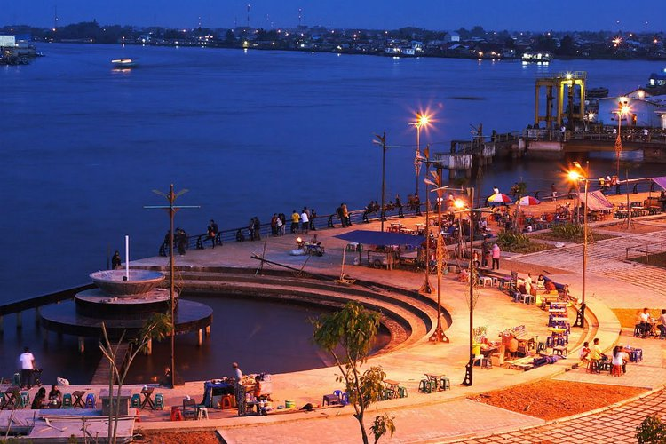
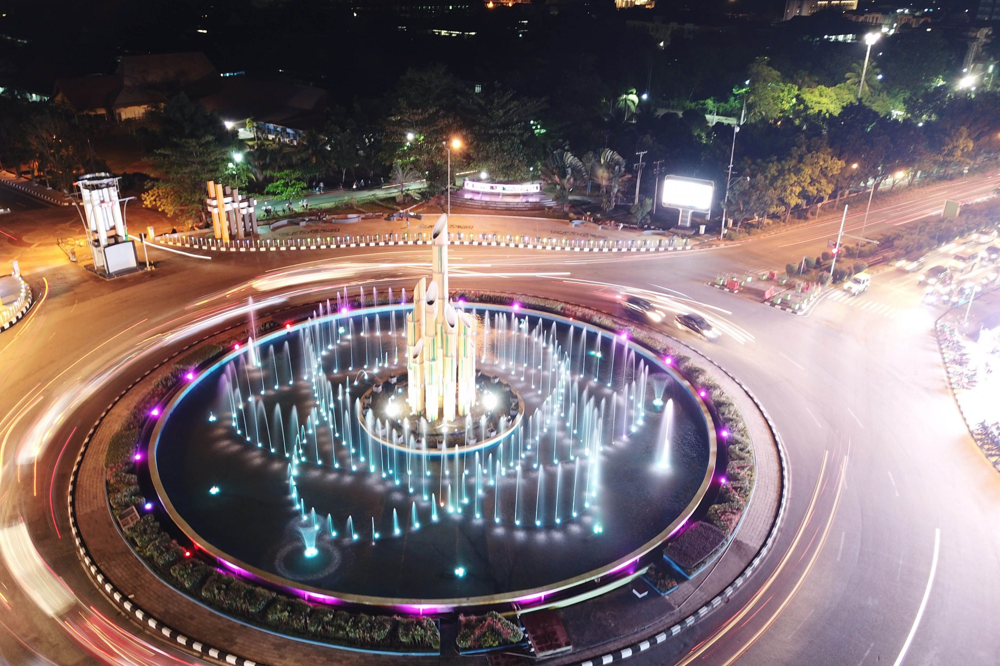
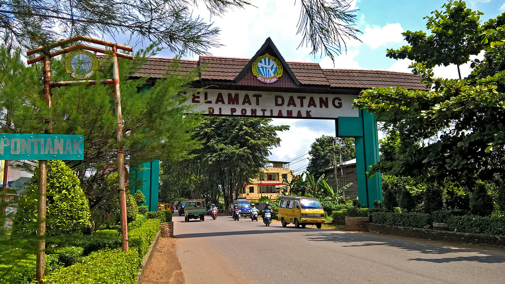
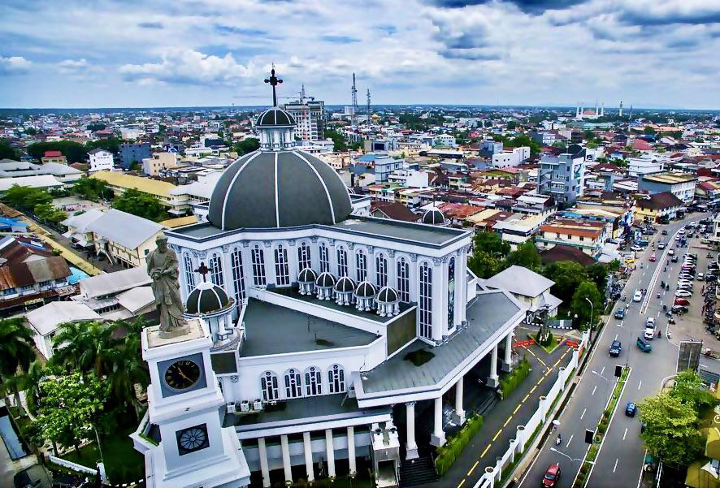
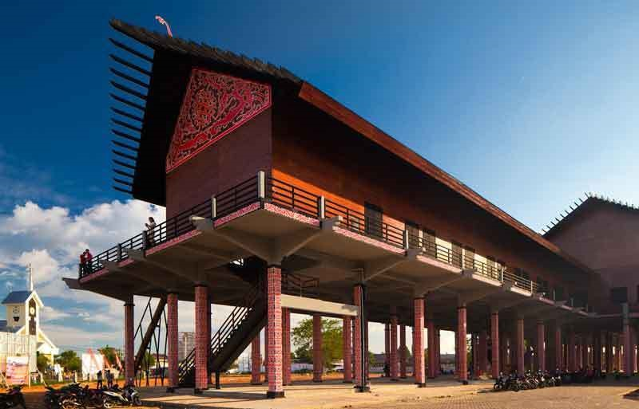
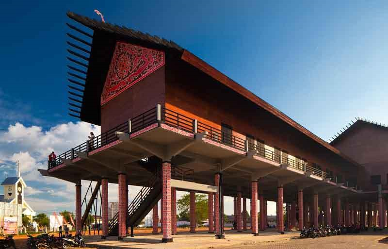
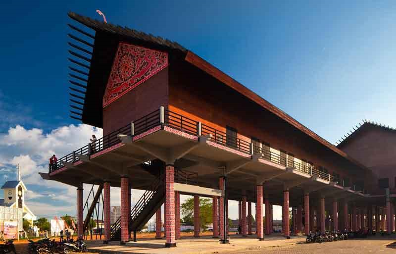
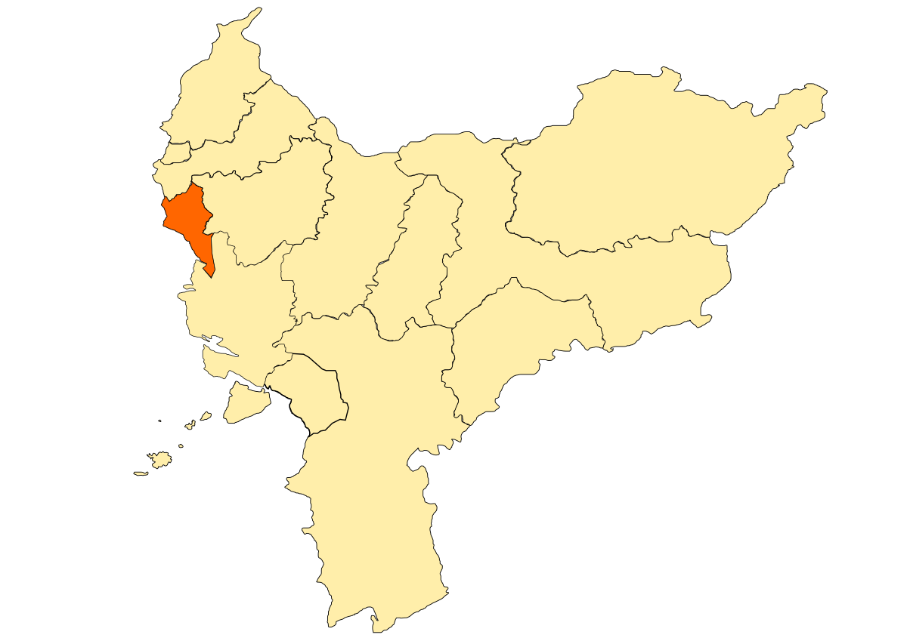

Nestled on the equator on the western coast of Borneo, Indonesia, lies Pontianak, a city shaped by its unique geography and tropical climate. The mighty Kapuas River, one of Southeast Asia's longest rivers, cuts a swathe through the city, forming a vital waterway and a defining feature of the landscape. Surrounding Pontianak are numerous islands and waterways, contributing to the city's nickname, "Venice of Indonesia."




 


歡 歡迎 歡迎光 歡迎光臨 歡迎光臨本 歡迎光臨本館

Pontianak: A City on the Equator
Tropical Climate
The climate in Pontianak is hot and humid year-round, with consistent temperatures averaging around 27°C (80°F). Expect frequent rainfall, particularly during the monsoon season, which typically runs from November to March. This tropical climate has fostered a lush and vibrant environment, making Pontianak a city rich in natural beauty.